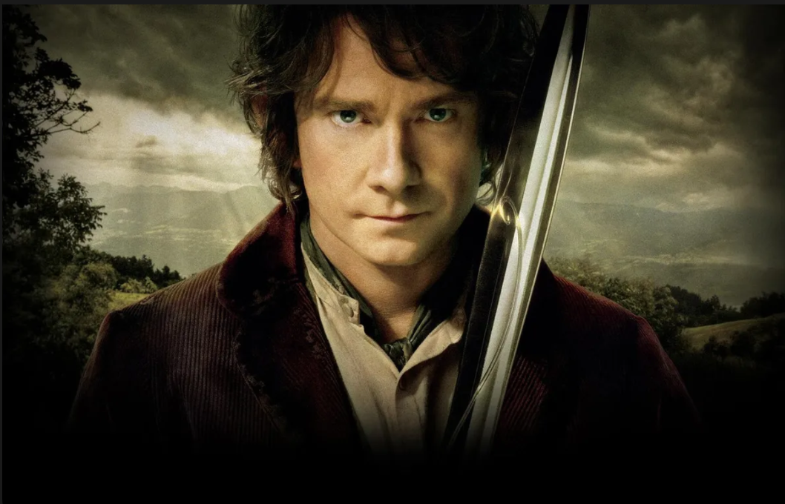
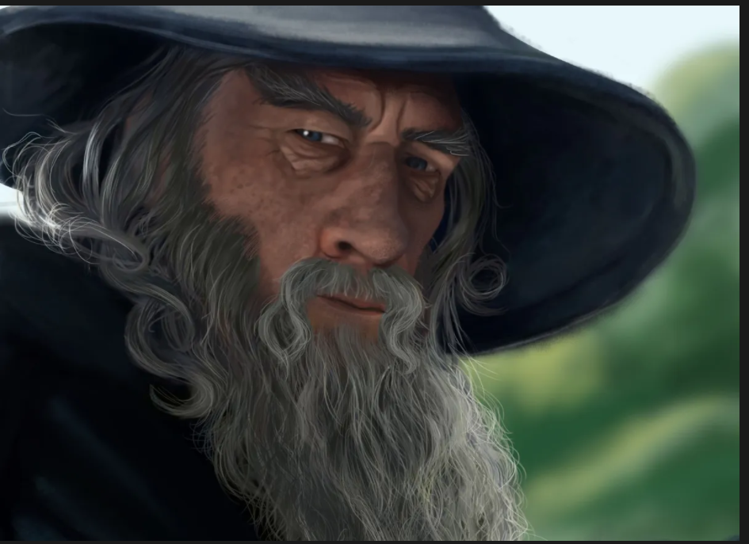

Thorin is the leader of the dwarves and is the son of Thrain, who used to be King under the Mountain. Before Thrain dies, he gives a key and map to Gandalf to pass on to Thorin, starting their mission to reclaim their lost homeland and treasure. Thorin works together with Gandalf and eventually recruits all the dwarves and Bilbo. He is the leader of the company to kill Smaug and reclaim the Lonely Mountain. Thorin is brave, stubborn, and proud, all traits exemplified in the book. Thorin also has a love of gold shared through dwarves, but this causes him to act irrationally through the later chapters of the book.

Bilbo is the book's main character and comes from Bag-End. Before Gandalf invites him for a grand adventure, he lives a quiet and peaceful life. Bilbo abandons his living customs throughout the journey but soon adapts to the group from becoming an outsider to being resourceful. Bilbo is the one to save the dwarves multiple times and is brave enough to encounter Smaug on his own to gather information. He steps up after Gandalf leaves and creates various plans to help the dwarves making him an instrumental part of the group.

In the book, Gandalf is seen as a wise older figure who leads the group and helps them from trouble. Gandalf chooses Bilbo as the fourteenth member of their group and organizes their expedition to kill Smaug. Gandalf saves the dwarves and Bilbo various times in the book, such as from the goblins or trolls using his magic to keep them safe. Gandalf gives advice on what to do. Another example is Gandalf delaying the goblins and wargs using his magic in time for the eagles to come and help.
Smaug is the main antagonist in the hobbit. We first learn of him through the dwarves' song and learn that he is a fire-breathing dragon. Smaug is feared and is seen as a great dragon who must die to reclaim the land for the dwarves. During King Thror's reign, he attacked the Lonely Mountain and laid waste on it, destroying many buildings. He also captured the town of Dale, forcing dwarves to flee in exile. Smaug gained massive sums of gold through his conquest and became very wealthy. The book is based on an adventure to kill Smaug and recapture the dwarves' homeland and gold.
Bilbo stepping up after Gandalf leaves: Bilbo is instilled with bravery and starts to lead the group when Gandalf leaves the group. For example, in chapter 8, Flies and Spiders, Bilbo saves the dwarves when they get captured by the spiders. He gets the courage to kill the spiders and names his sword Sting from the encounter. He devises a plan to distract the spiders using his magic ring and eventually frees all the dwarves. In the chapter "Barrels out of bond," when the Wood-Elves capture the dwarves, Bilbo sneaks past guards and devises a plan to save them. With little time he plans the escape of the dwarves and successfully escapes with them.
Another way Bilbo has become braver is through his various encounters with Smaug. While the dwarves are too scared to face Smaug, Bilbo gathers the courage and confronts him as a burglar. He retrieves the Arkenstone, which he used for his stand against Thorin, and collects information on Smaug's weak points. Time and time again, Bilbo has stepped up after Gandalf leaves, and this is a central theme in the hobbit showing character development. Bilbo shows a lot of heroism and is the one to save the other dwarves showing how far he has come from and the obstacles they have encountered. Through his actions, Bilbo shows the theme of bravery. Another big theme in the hobbit is greed which is shown various times in the book. The dwarves are continuously greedy throughout the book, especially Thorin. Thorin is afflicted with gold fever, which causes him to react irrationally to situations. For example, Lake-Town is destroyed by Smaug's flames after helping the dwarves by giving them shelter and food. Despite their kindness towards the dwarves, Thorin refuses to provide them with any gold to rebuild their city. Greed is behind many of his actions, and he is unreasonable. This quote from the book talks about how greed can ruin comradery "He had never bothered to wonder how the treasure was to be removed, certainly never how any part of it that might fall to his share was to be brought back to Bag-End Under-Hill. Now a nasty suspicion began to grow in his mind-had the dwarves forgotten this important point too, or were they laughing in their sleeves at him all the time?" this quote shows that Bilbo is having doubts and thinks the dwarves could betray him. Treasure causes discord among the best comrades, and greed is the main factor in this. The desire for treasure and wealth sows discord, causing people to falter and greed to prevail. The book also displays greed from the dwarves "They spoke aloud, and cried out to one another, as they lifted old treasures from the mound or the wall and held them in the light caressing and fingering them." this quote shows how much the dwarves are consumed by gold and their lust for it. The dwarves lose control over greed and continue to follow Thorin regardless of his irresponsible actions.
Battle of Five Armies: The most significant conflict in the book is the battle of the five armies. After Thorin doesn't share any of his gold, Bilbo and Gandalf decide to take matters into their hand. They retrieve the Arkenstone and use it to bargain with Thorin which works, but he is hoping his relative Dain will come with an army to assist him. The elves and humans already have armies assembled, but soon Gandalf warns them of goblins and wargs coming to attack for the gold. The humans, elves, and dwarves unite to fight the incoming threat. During the battle, Bilbo is unconscious most of the time due to a stone knocking him out. During the war, Thorin is mortally wounded by making amends with Bilbo before he dies. Beorn also joined the battle and shifted the tied as he was formidable. The alliance soon defeats the wargs and goblins. Fili and Kili die in the war, and after, Dain is named the King under the Mountain. Bard is named the new master of Lake-town, and soon the book comes to an end.
War of the armies:
Fun Facts:
Tolkien was credited for inventing the word hobbit after the oxford dictionary credited him with creating it in the 1970s.
Before the release of The Hobbit in Nazi Germany, the government asked if he was Jewish or not.
In Tolkien's first draft of his novel, Gandalf was going to be called Bladorthin, 'and Thorin would be named Gandalf.
In 1969, Tolkien sold movies right to The Hobbit and the Lord of the Rings to United Artists for 100,000 euros.
Hobbits have an average lifespan of 100 years, but Bilbo was able to make it to 131.
Hobbits love bright colors especially green and yellow, and dress to reflect their love of bright colors.
There is only one female named in The Hobbit, Bilbo's mom, Belladonna Took.
The Battle of the Five Armies holds the longest fight scene in a movie at just over 40 minutes.
Tolkien took most of the names for the dwarves from the poem Voluspa in the Poetic Edda.
The dwarves are divided into seven distinct clans: the Longbeards, Firebeards, Broadbeams, Ironfists, Stiffbeards, Blacklocks, and Stonefoots.